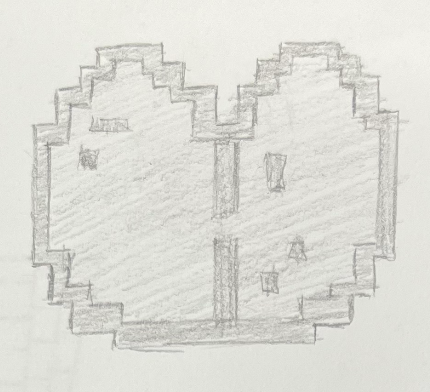
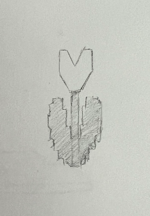
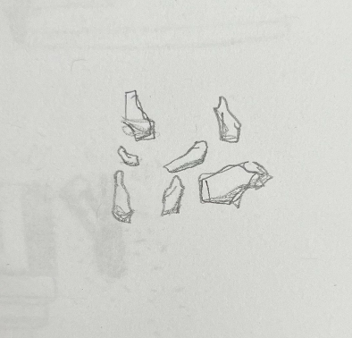

Tales From The Adventures of Me and the Wandering Trader!
Group 3: Exploring Remnants of Interactions With Steve
The “Exploring Remnants of Interactions With Steve” group involves snippets from Me's experiences
tracking Steve, learning about their build style and how to incorporate liked elements of their
work into their own. Particularly, they focus on peculiar elements in Steve's most recent lodging (and thus Me's most recent expedition.)
To ellaborate, the current snippets are drawings of a corner of Steve's home where we believe they kept supplies,
another corner with what we have found to have been referred to as a "closet", and of a nearby tower that may have
been used to scout out dangers from afar. Me chose these specific snippets because the items in them-the "carpet", "armor stand",
and the grand height of the tower-are unfamilar. Most of the crafts in this world are of much shorter height unless a mountain,
and most of the blocks in them are not designed to hold clothing or cover the floors. Yet, Steve knows of them, and Me
plans to experiment with them in future builds.
Exploring Remnants of Interactions With Steve
Trades From Our Discussions With The Wandering Trader

Large Tower Made By Steve, Reason Currently Unknown

A Lily Pad From a Nearby Swamp Biome

A Corner of Steve's Most Recent Past Residence, Empty Chests and A Peculiar 'Carpet'

A Tulip The Trader Thought Was Pretty

A Functional Element of Steve's Most Recent Past Residence, A 'Closet' With His 'Helmet'

A Block's Worth Of Pumpkin Seeds From Another Village
With Each Tale Comes Data
| Group | Biome | Distance From Home (According to Me) | "Wow" Factor | Number of Decorative Items | Discoverer (Team Member) |
| steve | mountainous plains | far | size/height | 0/NA | Me |
| steve | mountainous plains | far | carpet style | 1 | Me |
| steve | mountainous plains | far | armor stand | 1 | Me |
| trader | swamp | somewhat far (two biomes over) | never seen before by Me | 0/NA | Trader |
| trader | plains | close by (one biome over) | not common at home | 1 | Trader |
| trader | taiga | very far | new food type | 0/NA | Trader |